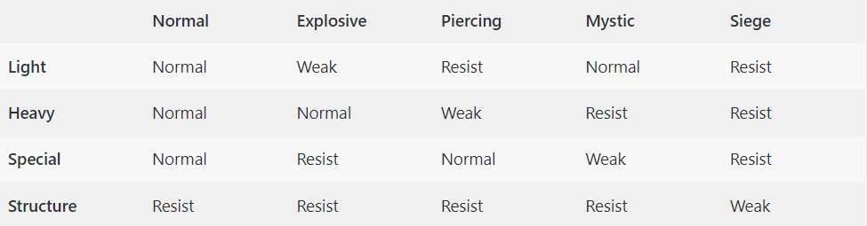
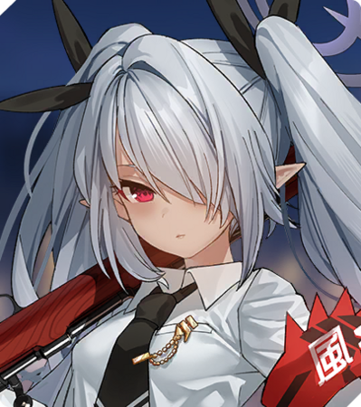
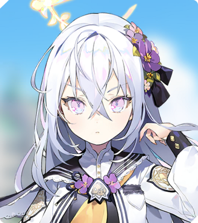
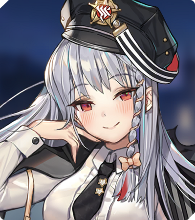
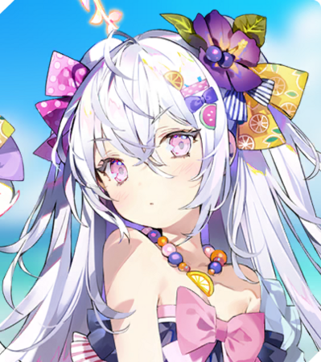
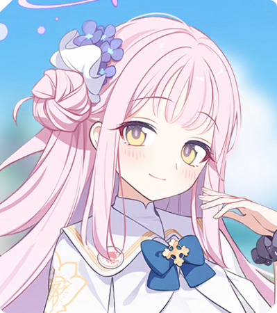
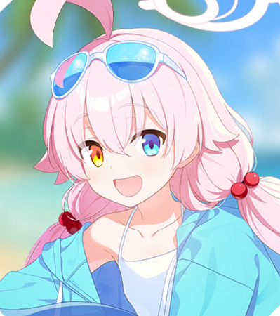
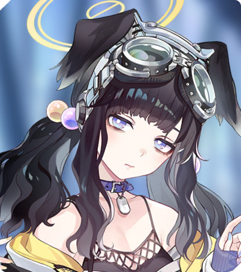
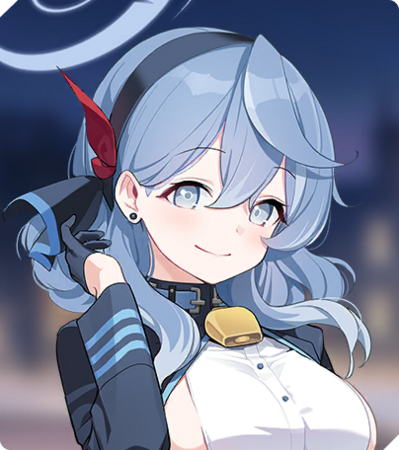

This game also has a gacha element that requires all its players to summon for the characters through their summoning banners
using the gacha currency called “Pyroxenes”. The gacha banners have one similar quality, i.e, the rarities of the Students
and the rates of summoning them. The rates for different rarities of Students are as follows:
- 3-Star Students – 2.5% for all Students
- 2-Star Students – 18.5% for all Students
- 1-Star Students – 79% for all Students
Now, for starters. There are a few students you might want to re-roll for. Some of them are :
- Ako (Support : Buffer)
- Iori (Striker : Dealer)
- Hibiki (Support : Dealer)
- Himari (Support : Buffer)
- Haruna (Striker : Dealer)
But as things stand as of right now, you will get all of them eventually, so you can go for
anyone you want.
I personally suggest new players to save their pyroxenes (the gacha currency) for limited banners and FEST,
especially FEST because the drop rates of 3 star students are doubled at that time.
The Damage Heirarchy in this game goes as follows :

Team Building :
In BlueArchive, you can take 1-3 teams to clear a stage. (Taking 3 teams at a time is very rare, as you can do it only at very end-game X-3 hard mode stages)
You generally need 1 or 2 teams to clear out a stage.
For early game, you should focus on Yellow (Dealing damage to heavy armor) and Red (Dealing damage to light armor) damage dealing teams.
Working towards a Mystic is a good idea.
Some of really useful general characters are listed below :
| Damage Type |
Character |
Availability |
Role |
| Heavy |
Iori |
 |
Available from non-limited banners. (3 stars) |
Dealer |
| Light |
Azusa |
 |
Available from non-limited banners. (3 stars) |
Dealer |
| Mystic |
Haruna |
 |
Available from non-limited banners. (3 stars) |
Dealer |
| Mystic |
Azusa (Swimsuit) |
 |
Available from Limited banners. (3 stars) |
Dealer |
| Heavy |
Mika |
 |
Available from Limited banners. (3 stars) |
Dealer |
| Light |
Hoshino (Swimsuit) |
 |
Available from Limited banners. (3 stars) |
Support |
| Light |
Hibiki |
 |
Available from non-limited banners. (3 stars) |
Dealer |
| Mystic |
Ako |
 |
Available from non-limited banners. (3 stars) |
Support |
These things aside, there are some other things you should focus on. (Granted there's only so much you can do at a time)
- Account level :
Your student's max level is capped at your Account level.
- Clearing Missions and Hard-Mode Missions
Clear missions to unlock higher-tier gear and clear hard-mode missions to unlock elephs to ascend students.
- Ascending characters to higher star level
Getting your students to minimum star level 3 unlocks all of their skills and star level 4 and 5 are stat boosts, star level 5 unlocks their custom weapon which is a huge stat boost + skill improvement.
- Upgrading the skills
Upgrading skills grants more damage/heal/buff. It is normally advised to upgrade EX skill. EX skills have a Max level of 5, meanwhile other skills are maxed out at lvl 10.
- Lessons
Doing lessons helps level up the friendship levels and gives some rewards like elephs and/or skill books.
- Using MomoTalk to increase Friendship levels
Increasing friendship level mildly boosts the stats of the students and unlock side-stories with the students.
Some things to look out for :
- If there's an event happening; Always focus on the event missions and buy useful items from event shop.
- Ignore commissions for credit and complete comissions for character EXP only when 2x or 3x drop is available/.
- Don't recharge AP with the help of pyroxenes.
- Buy the 4 lowest rarity materials from normal shop everyday.
- Don't overly focus on the PVP aspect of the game at start, it gives couple of pyrox but isn't worth going all out in.
- The only pack worth buying is the "Monthly pyroxene pack" or the half-month version of that pack. Anything else is not worth if you're giga-whale.
- Join a guild with high level players to use maxed out assistants for Total Assault and Joint Firing Drill.
- Use all your tickets for Bounty, Scrimmage and Raids (Total Assault and Joint Firing Drill).
- Focus on the Main story if you can, It's actually very good.
- Main story is locked by Missions. So try doing Missions first; if you don't want to get blue-balled (Speaking from Personal Experience).
I will periodically update it and slowly make it better, if you've read till now, thank you for sticking by.